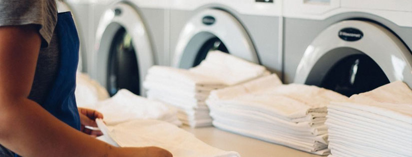

Laundry Kiloan: Kami menawarkan layanan laundry
kiloan dengan harga terjangkau.
Dry Cleaning: Layanan dry cleaning untuk
pakaian yang membutuhkan perawatan khusus.
Setrika: Layanan setrika untuk pakaian yang
sudah dicuci.
Pengantaran: Layanan pengantaran gratis untuk
area tertentu.
Layanan kami mencakup berbagai pilihan laundry berkualitas tinggi,
mulai dari pencucian, pengeringan, hingga penyetrikaan, semua
dilakukan dengan perhatian penuh untuk menjaga kebersihan dan
keawetan pakaian Anda.
Tentang Kami

Purely Laundry hadir sebagai solusi terpercaya untuk menjaga
kebersihan dan kesegaran pakaian Anda. Kami memahami pentingnya
waktu dan kenyamanan Anda, sehingga kami menawarkan layanan
laundry yang praktis, cepat, dan berkualitas tinggi. Dengan
peralatan modern dan proses yang ramah lingkungan, kami memastikan
setiap helai pakaian Anda mendapatkan perawatan terbaik. Kami
selalu berkomitmen untuk memberikan hasil yang bersih, wangi, dan
lembut, sehingga Anda merasa lebih nyaman dan percaya diri dalam
keseharian Anda.
Di Purely Laundry, kepuasan pelanggan adalah prioritas utama kami.
Tim profesional kami dilatih untuk menangani berbagai jenis kain
dengan keahlian dan kehati-hatian, mulai dari pakaian sehari-hari
hingga bahan khusus yang membutuhkan perawatan khusus. Dengan
layanan kami yang fleksibel dan mudah diakses, Anda bisa merasakan
kenyamanan tanpa perlu khawatir tentang cucian Anda. Nikmati
kemudahan, kualitas, dan hasil maksimal dari setiap layanan kami
yang dibuat khusus untuk Anda.
Testimoni Pelanggan
“Layanan laundry yang sangat memuaskan! Pakaian saya selalu
bersih dan wangi.”
★★★★★
Ani
“Saya sangat merekomendasikan Purely Laundry. Prosesnya cepat
dan hasilnya luar biasa!”
★★★★☆
Budi
“Kualitas layanan yang sangat baik! Saya akan terus menggunakan
jasa mereka.”
★★★★★
Citra
Kontak Kami
Jika Anda memiliki pertanyaan atau ingin menggunakan layanan kami,
jangan ragu untuk menghubungi kami melalui informasi di bawah ini: